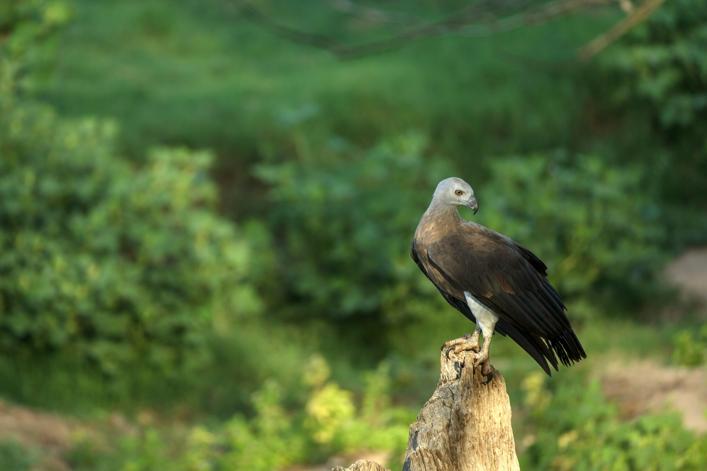

The Grey-Headed Fish Eagle is a large fish-eating raptor associated with rivers, lakes, reservoirs, and other freshwater habitats. Adults have a distinctive grey head, dark brown body, powerful yellow bill and legs, and broad wings. It usually hunts by watching from a perch near water and swooping down to seize fish. Its large size and deep wingbeats make it an impressive sight along wooded waterways.